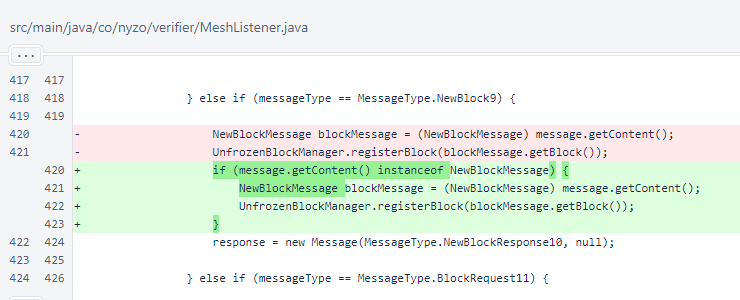
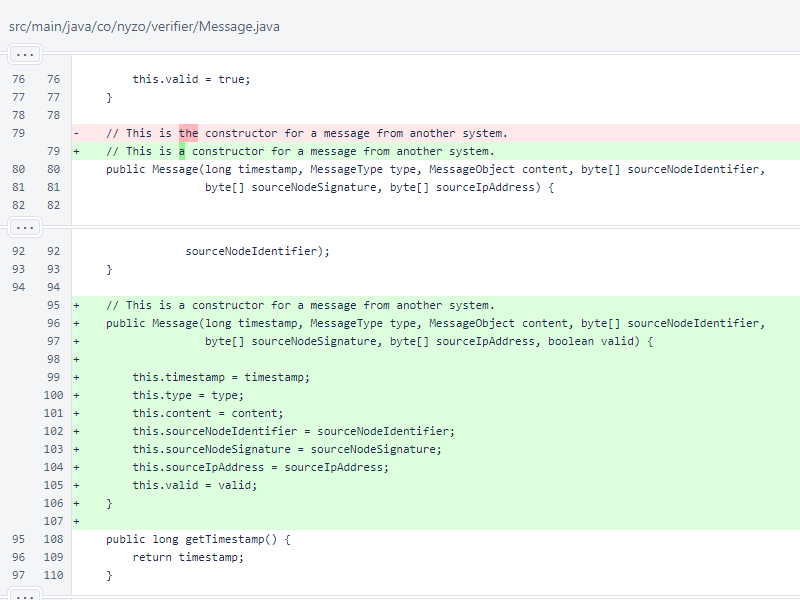
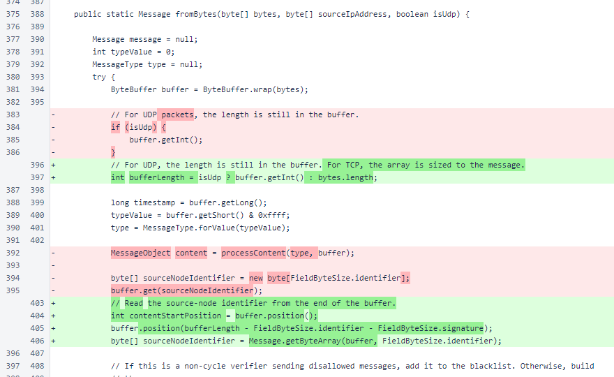
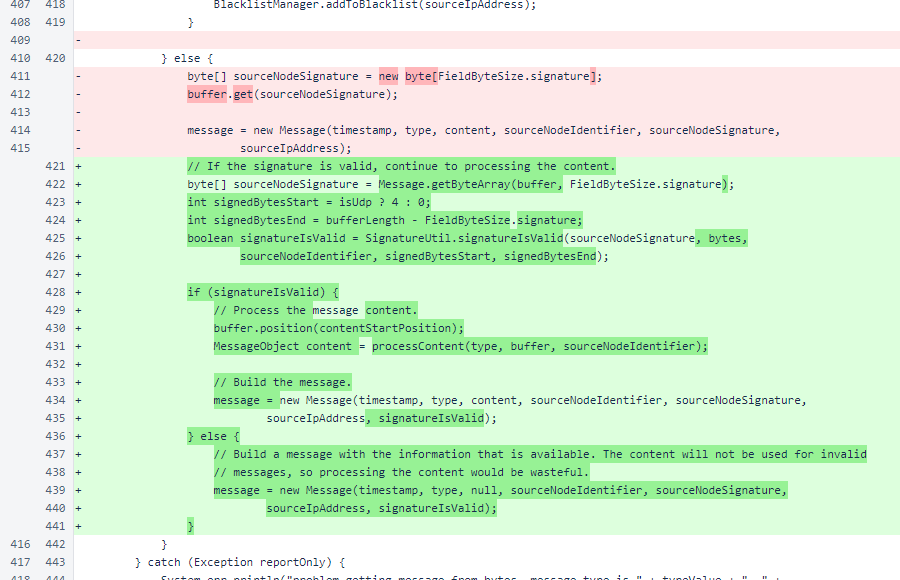
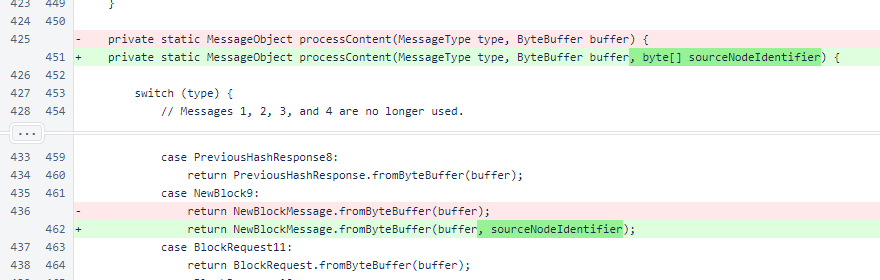
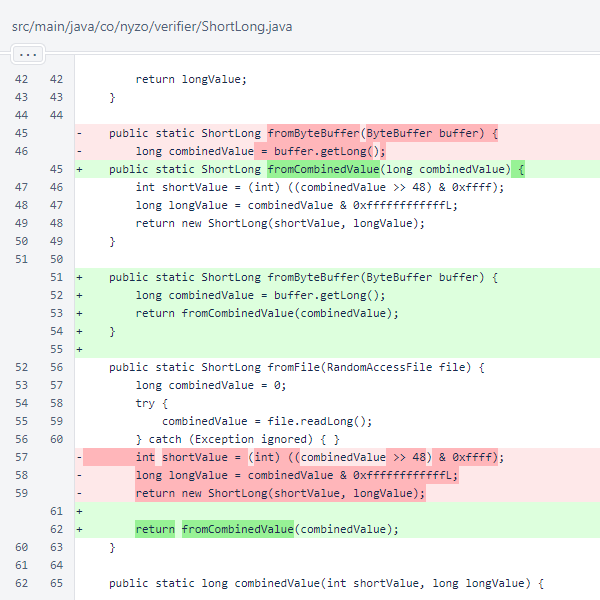
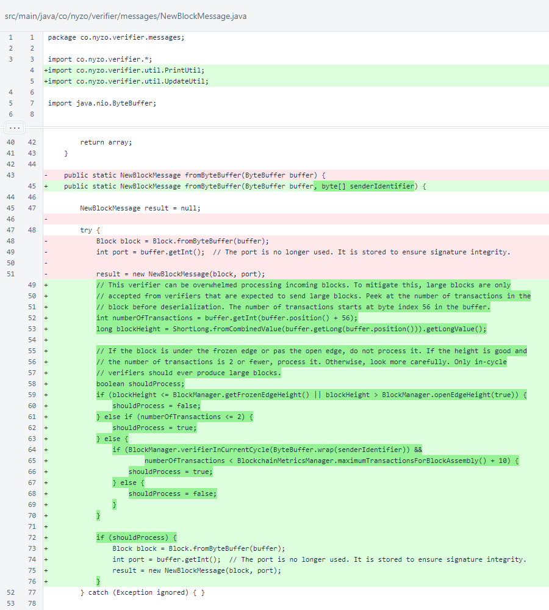
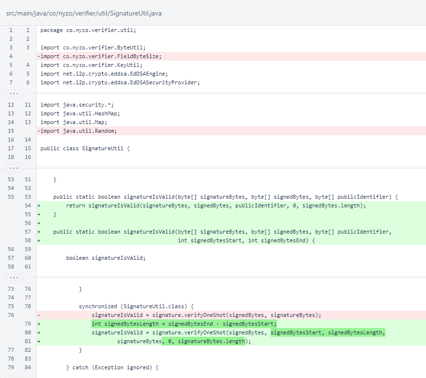

Nyzo version 600 (commit on GitHub) implements selective processing of blocks sent in NewBlock9 messages.
This version affects only the verifier. No other modes receive NewBlock9 messages.
The changes in this version are due to a report by a member of the community. This member provided an explanation and script showing that it was easy to cause excess work for a verifier with large blocks on incoming NewBlock9 messages. We encourage the cycle to reward the report appropriately. The reporter provided the following address for receiving a bounty:
In MeshListener.response(), incoming NewBlock9 content objects are now checked for proper type before processing. This does not affect behavior significantly, but it does avoid exceptions and null responses when the incoming block is not processed.
A new constructor was added to Message. This new constructor allows the valid value to be specified instead of requiring its computation in the constructor.
In Message.fromBytes(), the source-node identifier is now read before processing content. Note that integrity of the blacklist is preserved. While the signature is not verified before blacklisting, the blacklist indexes on IP address, and UDP messages are excluded from this process.
The content of the message is now processed only when the message signature is valid. This also avoids processing of content when an invalid message type is sent from an out-of-cycle verifier. The piéce de rèsistance of these changes, though, is the extraction of the source-node identifier before processing of content, and the sending of that identifier to the processContent() method.
The Message.processContent() method now accepts the source-node identifier, and it now passes that identifier to the NewBlockMessage.fromByteBuffer() method. As the fromByteBuffer() methods are convention, not interface definitions, no further changes are required for this additional argument.
In the ShortLong class, a new static method was created to, essentially, deserialize a long value to a ShortLong object. To reduce code duplication, this method is now used by the other static methods that build ShortLong objects.
In NewBlockMessage, restraint is now applied in processing the payload of the message. Before, all incoming blocks were processed. Now, all blocks with invalid heights are immediately excluded, and large blocks are only accepted from in-cycle verifiers.
In SignatureUtil, an overload of signatureIsValid() was added to allow validating signatures for signed data that does not fill an entire source array. This allows for signatures of incoming messages to be validated without creating copies of parts of the byte arrays that contain the messages. The old overload of signatureIsValid(), using the entire array of signed bytes, now passes through to the new overload.
